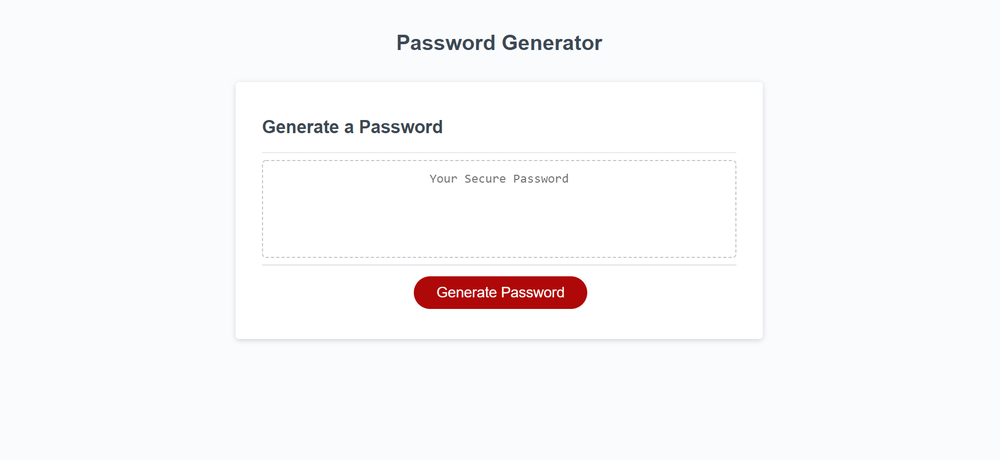

About Me
Hi, my name is Dylan Dimayuga. I am currently taking the Northwestern Full Stack Web Developing Coding Bootcamp. I have taken interest into the front-end development of websites and have just started getting to learn back-end development. After finishing this bootcamp, I hope to pursue a Web Developer role and become more proficient in building websites. So far, I find myself skilled in HTML and CSS, while being familiar with Javascript. I hope to become skilled in MySQL, jQuery, Heroku, API, and more. This porfolio will see constant changes as I hone my skills, complete more projects, and learn.
Interests
- Video Games
- Volleyball
- Eating at new restaurants
- Working Out
- Traveling
Projects
Password-Generator
This was one of my work projects where I created an application that will ask you a series of questions and generate a randomized password based on the inputs you put in.
About-Me-Quiz

This project is a quiz game that will test your knowledge about me as well as give you a score based on how you did on the quiz.
Work-Day-Scheduler

A project that shows a typical work day, that can take user input for the hour and save it. The schedule will also change colors based on if the hour has passed, if that hour is occurring, and if the hour has yet to come.
Weather-Dashboard
A weather application that will take city inputs and display the current weather and the weather forecast for the next 5 days.
News-To-Stock

This project is used to display a comparison between news articles and the value a stock is at for the day. If a stock name is inputted into the input, it will populate the news article area with 30 of the most popular articles that contain that input and display the stock value for the last 30 days of that stock.
Contact Info
555-555-5555